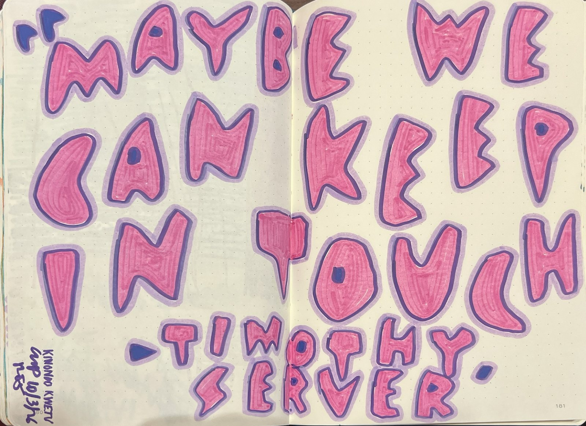

01
Collect
Keep the napkin, the label, the boarding pass. Save the little thing instead of tossing it.
saved, scribbled, stickered, treasured.
Tender Tokens Studio is where I letter, collage, and doodle the bits of a day most people toss: receipts, labels, napkins, boarding passes, a server's goodbye. Made in San Francisco, and in sketchbooks carried everywhere else.
A growing little museum of paper feelings: sketchbook pages from San Francisco, Kenya, Mallorca, and the in-between. Tap any page to look closer.
…and more being taped down all the time ✿
Dawn light can turn water into liquid metal. I first saw it on mornings at Lake Tahoe.
Diani, Kenya
watch with sound on Instagram ↗
saving scraps of your own? tag them #TenderTokensStudio ♥
Keep the napkin, the label, the boarding pass. Save the little thing instead of tossing it.
Tape, letter, layer, and let it be imperfect.
Every page gets a little “cmp” and the date, down to the minute. Proof it happened.
what did you almost throw away today?
A collab idea, a question about a page, or a weird little paper thing you think I'd love. Write me.
Send a tiny note ✉I read every tender little message ♥